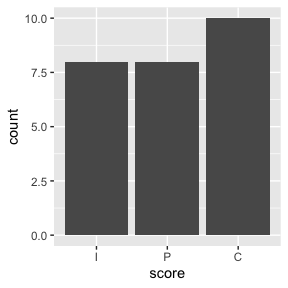

At their core, LLM evals are composed of three pieces:
-
Datasets contain a set of labelled samples.
Datasets are just a tibble with columns
inputandtarget, whereinputis a prompt andtargetis either literal value(s) or grading guidance. -
Solvers evaluate the
inputin the dataset and produce a final result (hopefully) approximatingtarget. In rinspect, the simplest solver is just an ellmer chat (e.g.ellmer::chat_claude()). -
Scorers evaluate the final output of solvers. They
may use text comparisons, model grading, or other custom schemes to
determine how well the solver approximated the
targetbased on theinput.
This vignette will explore these three steps one-by-one using
are, an example dataset that ships with the package.
First, load the required packages:
An R eval dataset
From the are docs:
An R Eval is a dataset of challenging R coding problems. Each
inputis a question about R code which could be solved on first-read only by human experts and, with a chance to read documentation and run some code, by fluent data scientists. Solutions are intargetand enable a fluent data scientist to evaluate whether the solution deserves full, partial, or no credit.
glimpse(are)#> Rows: 29
#> Columns: 7
#> $ title <chr> "after-stat-bar-heights", "conditional-grouped-summary", "co…
#> $ input <chr> "This bar chart shows the count of different cuts of diamond…
#> $ target <chr> "Preferably: \n\n```\nggplot(data = diamonds) + \n geom_bar…
#> $ domain <chr> "Data analysis", "Data analysis", "Data analysis", "Programm…
#> $ task <chr> "New code", "New code", "New code", "Debugging", "New code",…
#> $ source <chr> "https://jrnold.github.io/r4ds-exercise-solutions/data-visua…
#> $ knowledge <list> "tidyverse", "tidyverse", "tidyverse", "r-lib", "tidyverse"…At a high level:
-
title: A unique identifier for the problem. -
input: The question to be answered. -
target: The solution, often with a description of notable features of a correct solution. -
domain,task, andknowledgeare pieces of metadata describing the kind of R coding challenge. -
source: Where the problem came from, as a URL. Many of these coding problems are adapted “from the wild” and include the kinds of context usually available to those answering questions.
For the purposes of actually carrying out the initial evaluation,
we’re specifically interested in the input and
target columns. Let’s print out the first entry in full so
you can get a taste of a typical problem in this dataset:
cat(are$input[1])#> This bar chart shows the count of different cuts of diamonds, and each
#> bar is stacked and filled according to clarity:
#>
#> ```
#> ggplot(data = diamonds) +
#> geom_bar(mapping = aes(x = cut, fill = clarity))
#> ```
#>
#> Could you change this code so that the proportion of diamonds with a
#> given cut corresponds to the bar height and not the count? Each bar
#> should still be filled according to clarity.Here’s the suggested solution:
cat(are$target[1])#> Preferably:
#>
#> ```
#> ggplot(data = diamonds) +
#> geom_bar(aes(x = cut, y = after_stat(count) / sum(after_stat(count)),
#> fill = clarity))
#> ```
#>
#> The dot-dot notation (`..count..`) was deprecated in ggplot2 3.4.0, but
#> it still works:
#>
#> ```
#> ggplot(data = diamonds) +
#> geom_bar(aes(x = cut, y = ..count.. / sum(..count..), fill = clarity))
#> ```
#>
#> Simply setting `position = "fill" will result in each bar having a
#> height of 1 and is not correct.Creating an evaluation task
task_create() situates a dataset inside of an evaluation
task, a subclass of a tibble with some additional
attributes to track the experiment. Any dataset is fair game as long as
it has columns input and target. The
name argument is optional, but we’ll specify it here:
are_task <- task_create(dataset = are, name = "An R Eval")
are_task#> # Evaluation task An R Eval.
#> # A tibble: 29 × 8
#> title input target domain task source knowledge id
#> * <chr> <chr> <chr> <chr> <chr> <chr> <list> <int>
#> 1 after-stat-bar-heights "This… "Pref… Data … New … https… <chr [1]> 1
#> 2 conditional-grouped-summary "I ha… "One … Data … New … https… <chr [1]> 2
#> 3 correlated-delays-reasoning "Here… "Nota… Data … New … NA <chr [1]> 3
#> 4 curl-http-get "I ha… "Ther… Progr… Debu… https… <chr [1]> 4
#> 5 dropped-level-legend "I'd … "Also… Data … New … https… <chr [1]> 5
#> 6 geocode-req-perform "I am… "Form… Data … Debu… https… <chr [1]> 6
#> 7 ggplot-breaks-feature "Here… "```\… Progr… New … https… <chr [1]> 7
#> 8 ggplot-breaks-feature "Here… "```\… Progr… New … https… <chr [1]> 8
#> 9 grouped-filter-summarize "Here… "Ther… Data … New … NA <chr [1]> 9
#> 10 grouped-mutate "I ge… "From… Data … Debu… https… <chr [1]> 10
#> # ℹ 19 more rowsThe only notable change here for a user is the new id
column, which is just the row number.
Solving the task with Claude
Next, we’ll use task_solve() to apply a solver to our
task. A solver is some function that takes in an input
question and produces a result. The most basic solver in rinspect is a
plain ellmer chat, like chat_claude(). (ellmer chats
themselves are indeed not functions; rinspect special-cases them.) Users
can supply any function they please, though, that likely wraps calls to
ellmer chats in some way.
For this example, though, we’ll just use chat_claude().
At the time of writing, the current default model used by
chat_claude() is claude-3-5-sonnet-latest.
are_solved <- task_solve(are_task, solver = chat_claude())Each input from the dataset is sent to Claude. For each
input prompt, Claude generates a response that attempts to solve the R
coding problem.
task_solve() will append two columns,
output and solver. Here’s what the model
responded to that first question with:
cat(are_solved$output[1])#> Yes! To show proportions instead of counts, you can add `position =
#> "fill"` to the `geom_bar()` function. This will normalize each bar to
#> show the relative proportions of clarity within each cut category.
#> Here's the modified code:
#>
#> ```
#> ggplot(data = diamonds) +
#> geom_bar(mapping = aes(x = cut, fill = clarity), position = "fill")
#> ```
#>
#> This will create a stacked bar chart where each bar has the same height
#> (1.0 or 100%), and the segments within each bar show the proportion of
#> diamonds with each clarity grade for that particular cut.output is the final response from the solver, and the
solver is the ellmer chat object that led to the output.
It’s not technically required that your solvers provide these chats in
their output, but it is required if you’d like to explore your
evaluation results with inspect_view(), which is highly
recommended.
Scoring the solutions
Now we’ll evaluate the quality of Claude’s solutions using
task_score() with the model_graded_qa()
scorer:
are_scored <- task_score(
are_solved,
scorer = model_graded_qa(partial_credit = TRUE)
)model_graded_qa() is a model-graded scorer provides by
the package. This step will compare Claude’s solutions against the
reference solutions provided in the target column,
assigning a score to each solution using another model. That score is
either 1 or 0, though since we’ve set
partial_credit = TRUE, the model can also choose to allot
the response .5. rinspect will use the same model that
generate the final response in task_solve() as the model to
score solutions.
Hold up, though—we’re using an LLM to generate responses to questions, and then using the LLM to grade those responses?

This technique is called “model grading” or “LLM-as-a-judge.” Done correctly, model grading is an effective and scalable solution to scoring. That said, it’s not without its faults. Here’s what the grading model thought of the response:
cat(are_scored$scorer[[1]]$last_turn()@text)
#> Let me analyze this:
#>
#> The criterion specifies that we want to show the overall proportion of
#> diamonds for each cut (i.e., how many diamonds of each cut there are
#> relative to the total number of diamonds), while still maintaining the
#> clarity breakdown within each cut.
#>
#> The submitted answer suggests using `position = "fill"`, which actually
#> does something different - it normalizes each bar to a height of 1 (or
#> 100%) and shows the relative proportions of clarity within each cut.
#> This means each bar will have the same height regardless of how common
#> that cut is in the dataset.
#>
#> This is incorrect because:
#> 1. It doesn't show the true proportion of each cut in the dataset
#> 2. Using `position = "fill"` standardizes each bar to height 1, which
#> masks the actual proportional differences between cuts
#>
#> The correct solution (as shown in the criterion) should use
#> `after_stat(count) / sum(after_stat(count))` to calculate the true
#> proportion of each cut relative to the total number of diamonds.
#>
#> The submission provides a solution that creates a different
#> visualization than what was asked for, showing within-cut proportions
#> rather than overall proportions.
#>
#> GRADE: IAnalyzing the results
Especially the first few times you run an eval, you’ll want to
inspect (ha!) its outputs closely. The rinspect package ships with an
app, the Inspect log viewer, that allows you to drill down into the
solutions and grading decisions from each model for each sample. In the
first couple runs, you’ll likely find revisions you can make to your
grading guidance in target that align model responses with
your intent.
Interactively, we’d launch that app with
inspect_view(are_scored). You can do so yourself (using
this eval specifically!) with the following code (TODO: code to grab
from github and view).
For a cursory analysis, we can visualize correct vs. partially correct vs. incorrect answers:
are_scored <-
are_scored %>%
mutate(grade = case_when(
score == 1 ~ "Correct",
score == .5 ~ "Partially Correct",
score == 0 ~ "Incorrect"
),
grade = factor(grade, levels = c("Correct", "Partially Correct", "Incorrect"))
)
are_scored %>%
ggplot() +
aes(x = grade) +
geom_bar()
Claude answered fully correctly in 14 out of 29 samples, and partially correctly 8 times. For me, this leads to all sorts of questions:
- Are there any models that are cheaper than Claude that would do just as well? Or even a local model?
- Are there other models available that would do better out of the box?
- Would Claude do better if I allow it to “reason” briefly before answering?
- Would Claude do better if I gave it tools that’d allow it to peruse
documentation and/or run R code before answering? (See
btw::register_btw_tools()if you’re interested in this.)
If you’re interested in these questions as well, check out the other vignettes in this package!
Saving and loading evaluation results
When storing evaluation results for later use, you have a couple options:
-
Complete:
tasks are just tibbles, and can be saved to.rdaor.rdsfiles using the usualsave()orsaveRDS(). Tasks saved this way can be reloaded back into R and passed toinspect_view(). -
Portable: Under the hood, when you
inspect_view()a task, it’s written to a temporary.jsonfile that the Inspect log viewer can read. You can write to a permanent (and more portable than.rda) viewer-compatible.jsonfile withinspect_log(). Tasks can’t be read back into R from the.jsondirectly, but you can still view them in the log viewer withinspect_view().